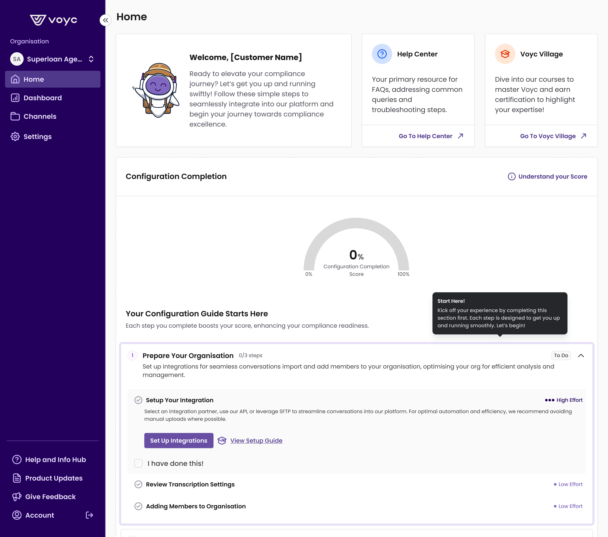
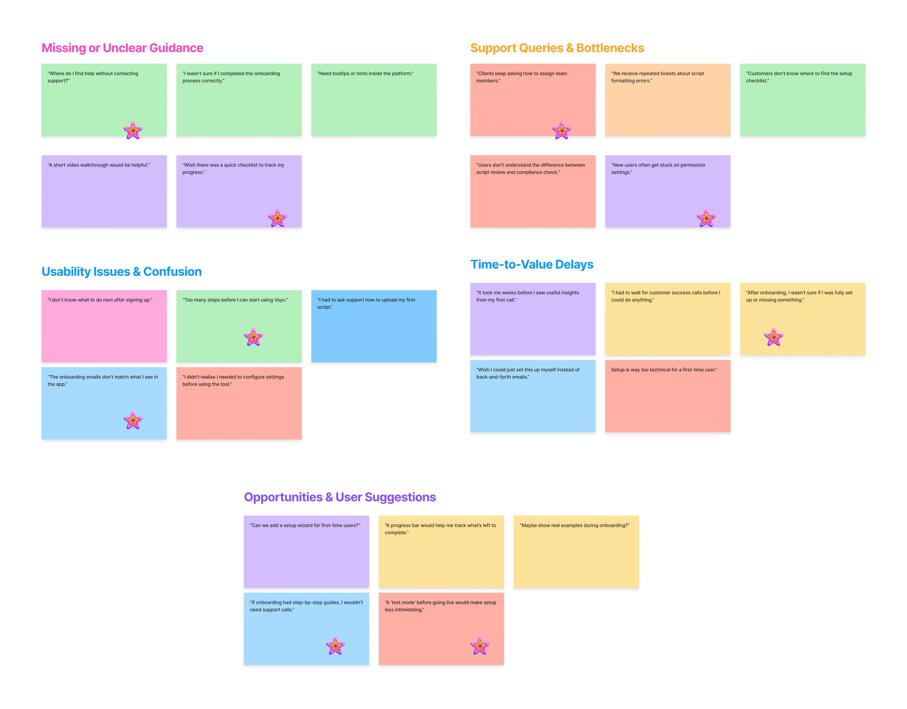
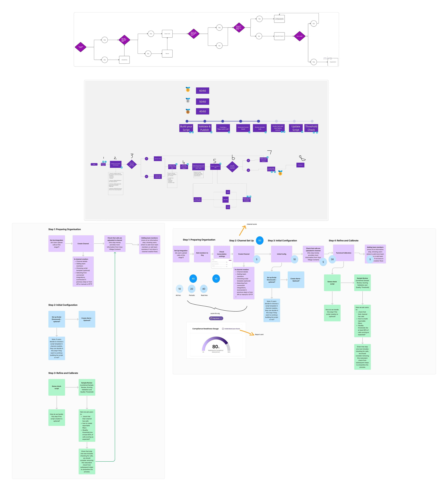
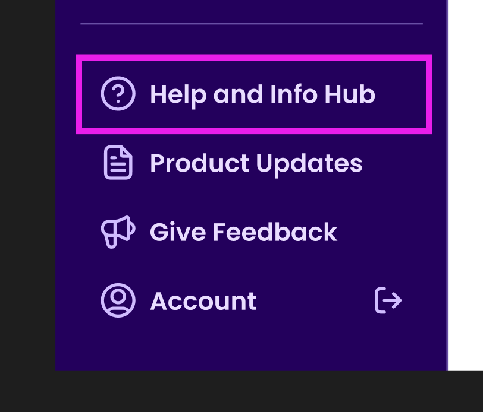
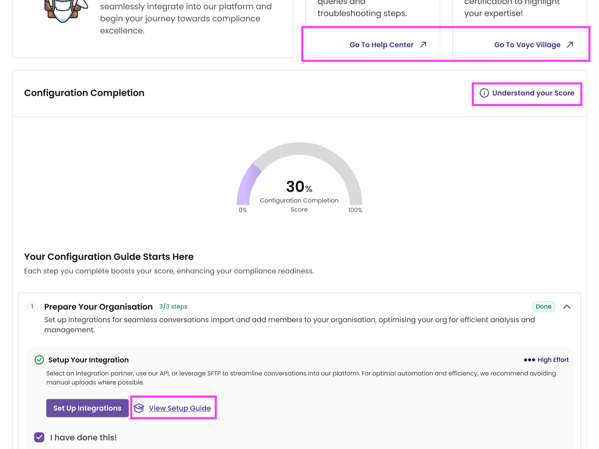
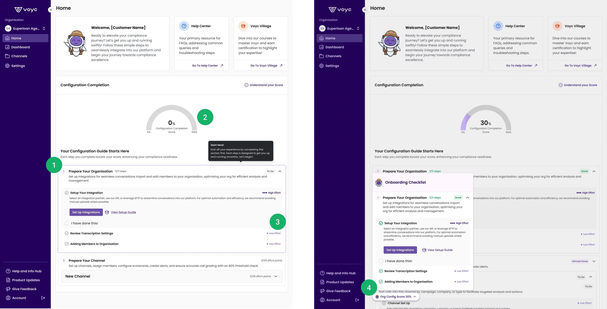

"We had customers on the verge of cancellation because they hadn't seen value yet. Every new client was burning Customer Success hours we didn't have."
, Internal, Voyc Customer SuccessReducing churn by 50% by redesigning an AI platform's onboarding flow.
When mounting client complaints and a heavy manual setup process threatened revenue, I led a rapid redesign of Voyc's multi-feature onboarding. The work combined in-depth research, cross-department workshops, and fast prototyping. The result: setup time down 70%, onboarding calls down 40%, time-to-value down to 64 days.

Voyc's customers weren't reaching value fast enough.
Voyc is a UK-based startup that uses AI to monitor 100% of call-center conversations for compliance breaches, a product that pays for itself the moment it catches a single mis-selling event. But customers weren't getting to that moment fast enough.
New clients were stuck in onboarding for up to six months before they could run a single script check, and our Customer Success team was drowning in repetitive setup calls. As the first product designer at Voyc, I led the end-to-end redesign of onboarding: from user research and journey mapping through to a shipped in-app self-service flow.
From hours to minutes: transforming onboarding for rapid value.
Voyc's users faced a cumbersome onboarding process that required up to five 45-minute calls and an additional five hours of manual support, delaying their ability to see the product's value for six months.
This inefficient process led to user frustration, increased churn, and overwhelmed our customer success team. We had key clients on the brink of cancellation. The risk was real and immediate.
The project aimed to make onboarding faster and lighter by introducing a self-service flow that would reduce support interactions by at least 50%, shorten time-to-value, and boost user retention. Three specific problems were holding things up:
1. Manual onboarding bottlenecks
The setup process was call-dependent and slow. It delayed users from realising value and pointed clearly at the need for a self-service, in-app flow. Customers couldn't move forward without our Customer Success team, and we couldn't scale without fixing that dependency.
2. Insufficient in-app guidance
Without integrated help content, users had to rely on customer support, which increased queries and frustration. When a user hit confusion (and given the complexity of compliance scripting, this happened often), their only option was to open a support ticket.
3. Limited onboarding visibility
Users struggled to track their progress without a clear overview of pending tasks. The uncertainty bred support queries of its own: "Am I doing this right? Am I nearly done?"
Six research moves to pinpoint the friction.
To pinpoint where users struggled, I conducted six targeted research activities: attending onboarding sessions, conducting user interviews, analysing support tickets, attending stakeholder workshops, affinity mapping, and running a prioritisation session.
What this surfaced was a fragmented manual process delaying time-to-value and burning out the support team. The insights confirmed that a self-service guided flow would better fit users' mental models and meet a real business need.
What I learned, from whom
"I waited two months for my first useful insight from the platform."
"Every time I got stuck I had to email support. It killed momentum."
"My week is half setup calls. There's no time for strategic work."
"We almost cancelled. We weren't getting any value out of what we'd bought."
Visual mapping of user pain points
I clustered everything we learned into five themes: Missing or Unclear Guidance, Support Queries & Bottlenecks, Usability Issues & Confusion, Time-to-Value Delays, and Opportunities & User Suggestions. Surfacing the patterns this way made them visible to the rest of the team.

A snapshot from our FigJam workshop. Sticky notes clustered user feedback to pinpoint the key friction points in onboarding.
Validating the new flow with iterative service-level testing.
Once the discovery synthesis showed us where things were breaking down, the next move was to design a self-service flow that fit how customers actually thought about getting started. And then validate it, before committing to a build.
Iterative testing: validating the new flow
I drafted an initial onboarding flow and we tested it during manual onboarding sessions led by the Learning Experience team. The hands-on format let us adjust the process in real time. It confirmed what worked and what didn't, and saved engineering effort by catching gaps in the service before they were ever built.
The flowchart went through three iterations during these sessions, each one shaped by real customer feedback:

Flow chart validation: three iterations of the onboarding flow, refined live during sessions with the Learning Experience team.
How might we embed help content where users actually need it?
Users got stuck during onboarding because the guidance wasn't where they needed it. Without contextual help inside the product, they had to fall back on customer support, which slowed them down and frustrated them.
I wanted to give users the tools to troubleshoot on their own. We embedded contextual tips and clear setup instructions directly inside the relevant screens, so the help came to the user instead of the other way around. The change took load off support, sped up time-to-value, and made the experience feel less like a maze.


Final implementation: an in-app onboarding checklist.
Users had no view into their onboarding progress, which left them feeling lost and reaching for support. They couldn't see what was done, what was next, or how close they were to the finish line.
I designed a transparent dashboard with real-time progress tracking and clear next steps. Through research and iterative testing with the Learning Experience team, this turned into an in-app checklist that put users back in control of their own setup.

Onboarding checklist implementation, shown at 0% and 30% completion. Four design moves work together: (1) the checklist itself, (2) a completion score, (3) effort indicators per task, and (4) a floating mini-checklist that persists across screens.
Four design moves, working together
01Onboarding checklist for easy access
Putting the checklist on the homepage made key tasks visible from the moment a user logged in. It cut confusion and reduced the reliance on support that was slowing things down.
02Completion score for progress tracking
The progress indicator gave users a sense of momentum. People are more likely to finish a setup when they can see how close they are.
03Task & effort indicators for clarity
Each task showed its expected effort upfront. Users could plan their day instead of guessing how long things would take, which cut a whole category of "is this taking too long?" support tickets.
04Floating checklist, always in reach
The checklist stayed visible as users moved between screens, so they never had to navigate back to remember where they were. Lower cognitive load, fewer dropped sessions.
From six months to 64 days.
We cut setup time by 70%, onboarding calls by 40%, and brought time-to-value down to 64 days.
The numbers matter because they represent real customers reaching real value faster, and a Customer Success team that finally had time for strategic work instead of setup calls. Critically, the change stuck. The self-service flow scaled cleanly with new customer growth, and Customer Success was freed up to do the strategic work the product's growth needed.
What this project taught me.
Looking back, the lesson I take from this is simple: deep research plus iterative design beats clever guessing every time. Along the way I sharpened my prototyping speed, my cross-functional facilitation, and my willingness to validate before building.
01Process impact
Out of this project I built a reusable stakeholder workshop template: a facilitation structure for prioritisation sessions and cross-functional problem-framing, that the team adopted on subsequent initiatives. Naming the artefact mattered. A template turns a one-off facilitation move into a repeatable team practice.
02Collaboration impact
I worked across Customer Success, Learning Experience, Engineering, and Product, and we ended up with shared templates and clearer communication channels that outlived the project itself. Better documentation. Faster decisions. Fewer cross-team misunderstandings.
03Personal growth
Working close to real numbers (setup hours, support tickets, time-to-value) sharpened the way I weigh design trade-offs. I'm now quicker to ask "what's the data telling us?" instead of leaning only on instinct, and quicker to ship a small validated step over a polished but unproven leap.
04Onboarding is a service problem
The 70% win came from treating onboarding as a cross-functional service (Customer Success, Learning Experience, Product, Engineering) with the UI as one layer of a bigger system. If I'd approached it as "make the in-app flow better," we'd have shipped prettier screens and saved maybe a call or two.